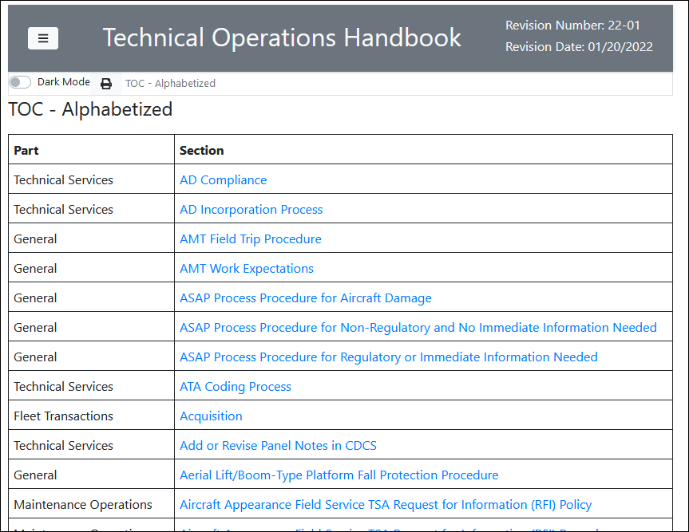

Overall goal of these automation functions is to increase efficiency and quality, while reducing risk and waste.
function updateImageHeight(){
delete($oid_graphics);
delete($oid_inlinegraphics);
$graphicsUpdated=0;
$inlineGraphicsUpdated=0;
$missingWidth=0;
$currentGraphicHeight="";
$currentGraphicWidth="";
$newGrapicHeight="";
$currentInlWidth="";
$currentInlHeight="";
$newInlHeight="";
#create arrays of all entity graphics and inline graphics
oid_find_children(oid_first(), oid_graphics, "graphic")
oid_find_children(oid_first(), oid_inlinegraphics, "inlinegraphic")
#entity graphics
if(count($oid_graphics)>0) {
for($eachGraphic in $oid_graphics){
oid_graphic_size($oid_graphics[$eachGraphic], imgWidth, imgHeight, 1)
$currentGraphicHeight=oid_attr($oid_graphics[$eachGraphic], "height")
$currentGraphicWidth=oid_attr($oid_graphics[$eachGraphic], "width")
#The height is only calculated if there is a width attribute set.
if($currentGraphicWidth!=""){
#find the correct height in pixels. Math conversion using Javascript.
$newGrapicHeight=javascript("(((".javascript(substr($currentGraphicWidth,1,(length($currentGraphicWidth)-2))." * 96")." * ".imgHeight.")/".imgWidth.")).toFixed(0)")."px";
#if height missing or if current height doesnt match new height, set new height.
if($currentGraphicHeight=="" || $currentGraphicHeight!=$newGrapicHeight){
#set the attribute height.
oid_modify_attr($oid_graphics[$eachGraphic], "height", $newGrapicHeight)
$graphicsUpdated++
}
}
#keep track of graphics missing width attr to notify user.
else{
$missingWidth++
$missingGraphicWidth[$missingWidth]=oid_attr($oid_graphics[$eachGraphic], "entityref")
}
}
}
#inline graphics
if(count($oid_inlinegraphics)>0){
for($eachInlineGraphic in $oid_inlinegraphics){
oid_graphic_size(oid_inlinegraphics[eachInlineGraphic], inlWidth, inlHeight, 1)
$currentInlWidth=oid_attr(oid_inlinegraphics[eachInlineGraphic], "width")
$currentInlHeight=oid_attr(oid_inlinegraphics[eachInlineGraphic], "height")
#The height is only calculated if there is a width attribute set.
if($currentInlWidth!=""){
#Get height in pixels
$newInlHeight=javascript("(((".javascript(substr($currentInlWidth,1,(length($currentInlWidth)-2))." * 96")." * ".inlHeight.")/".inlWidth.")).toFixed(0)")."px";
#if height is missing or if current height does not match new height, set new height.
if($currentInlHeight=="" || $currentInlHeight!=$newInlHeight){
#set the attribute height.
oid_modify_attr($oid_inlinegraphics[$eachInlineGraphic], "height", $newInlHeight)
$inlineGraphicsUpdated++
}
}
#keep track of graphics missing width attr to notify user.
else{
$missingInlWidth++
$missingInlGraphicWidth[$missingInlWidth]="true"
}
}
}
#if no graphics and no inline graphics, create pop up.
if(count($oid_graphics)==0 && count($oid_inlinegraphics)==0){
message_box("No graphics were found.", 0x00, "Update Image Heights")
}
else{
#Display message and popup window to show complete.
if($graphicsUpdated>0){$graphicsMessage="\nGraphics updated: ".$graphicsUpdated}else{$graphicsMessage=""}
if($inlineGraphicsUpdated>0){$InlineMessage="\nInline Graphics updated: ".$inlineGraphicsUpdated}else{$InlineMessage=""}
#message_box("Image heights set.\n".$graphicsMessage.$InlineMessage, 0x00, "Update Image Heights")
eval "Image heights set.\n".$graphicsMessage.$InlineMessage output=>*
}
#if missing widths were found, notify user of which graphic. outputs graphic name.
if(count($missingGraphicWidth)>0){
eval "\nThe following graphics are missing widths:" output=>*
for($eachgraphic in $missingGraphicWidth){
eval "\n -".$missingGraphicWidth[$eachgraphic] output=>*
}
}
if(count($missingInlGraphicWidth)>0){
eval "\nRun Validate Inline Grapics" output=>*
}
}
function resetRevdate(){
#changes all the revdates for the currently selected element, all subsequent siblings, and the children of self and all siblings.
#Cursor placement is vital.
#Create a user input menu to explain and ensure this change is necessary.
$choice = response("You are about to set the revision date attribute to xx/xx/xxxx for this element, and all child elements. Are you sure you want to proceed?", "Yes", "No")
# If 'OK' is selected, search and replace.
if ($choice==1) {
$countRevdateChanges=0;
delete($oid_revdates);
#Find the cursor location element.
$selectedElement=oid_current_tag();
#eval "\n Revdate Modified: ".oid_attr(selectedElement, "revdate") output=>*
#loop through all siblings starting with the selectedElement
while (oid_valid($selectedElement)){
#change the "revdate" attribute to "xx/xx/xxxx"
oid_modify_attr(selectedElement, "revdate", "xx/xx/xxxx");
#Find child attributes that have a revdate.
oid_find_child_attrs(selectedElement, oid_revdates, "revdate");
if (oid_attr(selectedElement, "revdate")){
$countRevdateChanges +=1;
}
#Change the revdate for the children of the selected element.
for($rdate in $oid_revdates){
oid_modify_attr($oid_revdates[$rdate], "revdate", "xx/xx/xxxx");
$countRevdateChanges +=1;
}
#next sibling
selectedElement = oid_next(selectedElement)
}
eval "\n Revdates changed: ".$countRevdateChanges output=>*
}
Southwest Airlines Employee website (SWALife) moved to Sharepoint, which does not support HTML manuals. A new content web server was created for all manuals (both PDF and HTML), and all manuals are now located on this web server.
Instead of Technical Writers manually updating all links to point to new the web server, I created automation to complete the task. Each manual can be completed in under 1 minute, saving time and reducing risk.
The function looks for URL links that point to SWALife, and changes the URL link to the new path. Hours of work was automated and completed a matter of seconds per each manual.
Note: I only included a portion of the function. The list of updated manuals is very long.
###########################
# CHECKS TO SEE IF NEED TO UPDATE LINKS TO NEW CP WEB SERVER.
##########################
function updateUrlLinksCheck() {
$matchFound=0;
$urlLinkText="";
$yesupdatelinks="false"
# OLD PATH -- https://www.swalife.com/docs/operations/public/centralPubs/manuals/swa/b737/smm/r00-00/pdfall/smm.pdf
# NEW PATH -- https://centralpubs.swalife.com/swa/b737/smm/r00-00/html/index.html
indexManual()
#if there are links.
if(count($linkReportLOCATION)>0) {
for($eachLink1 in $linkReportTYPE){
if($linkReportTYPE[$eachLink1]=="url" && !match(tolower($linkReportURL[$eachLink1]), "mailto")) {
#capture text of link;
$urlLinkText=$linkReportURL[$eachLink1]
#find if swalife path is found in string.
$matchFound=match($urlLinkText, "https://www.swalife.com/docs/operations/public/centralPubs/manuals/swa/b737")
#if path does exist, replace the beginning of path.
if($matchFound>0) {
#if a single match is found, YES links need to be updated.
message_box("Yes, links need to be updated!",0x00)
$yesupdatelinks="true"
break;
}
}
}
if($yesupdatelinks=="false"){
message_box("No, links DO NOT need to be updated!",0x00+0x10)
}
} else {
message_box("No links of any kind exist in this manual.",0x00)
}
}
###########################
# UPDATES URL LINKS TO NEW CP WEB SERVER.
##########################
function updateUrlLinks() {
$countLinkURL=0;
$urlLinkText="";
# OLD PATH -- https://www.swalife.com/docs/operations/public/centralPubs/manuals/swa/b737/smm/r00-00/pdfall/smm.pdf
# NEW PATH -- https://centralpubs.swalife.com/swa/b737/smm/r00-00/html/index.html
indexManual()
#if there are links.
if(count($linkReportLOCATION)>0)
{
#for each link, make sure it is a URL link and not a MAILTO link.
eval "\n=====================================" output=>*
eval "\nUPDATE URL LINKS" output=>*
eval "\n".$manualTitle output=>*
eval "\nRevision Number: ".$manualRevnumber output=>*
eval "\nRevision Date: ".$manualRevdateCoverpage output=>*
eval "\nReport Run: ".time_date() output=>*
eval "\nRun by: ".username() output=>*
eval "\n-------------------------------------\n" output=>*
for($eachLink1 in $linkReportTYPE){
if($linkReportTYPE[$eachLink1]=="url" && !match(tolower($linkReportURL[$eachLink1]), "mailto")) {
#capture text of link;
$urlLinkText=$linkReportURL[$eachLink1]
#APOEM
$matchFoundAPOEM=match($urlLinkText, "https://www.swalife.com/docs/operations/public/centralPubs/manuals/floem/floem.pdf")
if($matchFoundAPOEM>0) {
$countLinkURL++;
$newURL=""."https://centralpubs.swalife.com/swa/b737/apoem/r00-00/pdfall/apoem.pdf".""
$modifyWork=oid_modify_attr($linkReportOID[$eachLink1], "targetdoc", $newURL)
eval "\n\n".$linkReportLOCATION[$eachLink1]."\n- ".$urlLinkText."\n+ ".oid_attr($linkReportOID[$eachLink1],"targetdoc")."\n\n" output=>*
$urlLinkText=$newURL
}
#COBPM
$matchFoundCOBPM=match($urlLinkText, "https://www.swalife.com/docs/operations/public/centralPubs/programs/carry-on_baggage_program.pdf")
if($matchFoundCOBPM>0) {
$countLinkURL++;
$newURL=""."https://centralpubs.swalife.com/swa/b737/cobpm/r00-00/pdfall/cobpm.pdf".""
$modifyWork=oid_modify_attr($linkReportOID[$eachLink1], "targetdoc", $newURL)
eval "\n\n".$linkReportLOCATION[$eachLink1]."\n- ".$urlLinkText."\n+ ".oid_attr($linkReportOID[$eachLink1],"targetdoc")."\n\n" output=>*
$urlLinkText=$newURL
}
#COC_E
$matchFoundCOC_E=match($urlLinkText, "https://www.swalife.com/docs/operations/public/centralPubs/manuals/swa/b737/coc_e/r00-00/pdfall/coc_e.pdf")
if($matchFoundCOC_E>0) {
$countLinkURL++;
$newURL=""."https://centralpubs.swalife.com/swa/b737/coc_e/r00-00/pdfall/coc_e.pdf".""
$modifyWork=oid_modify_attr($linkReportOID[$eachLink1], "targetdoc", $newURL)
eval "\n\n".$linkReportLOCATION[$eachLink1]."\n- ".$urlLinkText."\n+ ".oid_attr($linkReportOID[$eachLink1],"targetdoc")."\n\n" output=>*
$urlLinkText=$newURL
}
#COC_S
$matchFoundCOC_S=match($urlLinkText, "https://www.swalife.com/docs/operations/public/centralPubs/manuals/swa/b737/coc_s/r00-00/pdfall/coc_s.pdf")
if($matchFoundCOC_S>0) {
$countLinkURL++;
$newURL=""."https://centralpubs.swalife.com/swa/b737/coc_s/r00-00/pdfall/coc_s.pdf".""
$modifyWork=oid_modify_attr($linkReportOID[$eachLink1], "targetdoc", $newURL)
eval "\n\n".$linkReportLOCATION[$eachLink1]."\n- ".$urlLinkText."\n+ ".oid_attr($linkReportOID[$eachLink1],"targetdoc")."\n\n" output=>*
$urlLinkText=$newURL
}
#ESPM
$matchFoundESPM=match($urlLinkText, "https://www.swalife.com/docs/operations/public/centralPubs/programs/Exit_Seating_Program.pdf")
if($matchFoundESPM>0) {
$countLinkURL++;
$newURL=""."https://centralpubs.swalife.com/swa/b737/espm/r00-00/pdfall/espm.pdf".""
$modifyWork=oid_modify_attr($linkReportOID[$eachLink1], "targetdoc", $newURL)
eval "\n\n".$linkReportLOCATION[$eachLink1]."\n- ".$urlLinkText."\n+ ".oid_attr($linkReportOID[$eachLink1],"targetdoc")."\n\n" output=>*
$urlLinkText=$newURL
}
#FA_SSI
$matchFoundFASSI=match($urlLinkText, "https://www.swalife.com/docs/inflight/secure/efb/fa_ssi.pdf ")
if($matchFoundFASSI>0) {
$countLinkURL++;
$newURL=""."https://centralpubs.swalife.com/swa/b737/fam_ssi/r00-00/pdfall/fa_ssi.pdf".""
$modifyWork=oid_modify_attr($linkReportOID[$eachLink1], "targetdoc", $newURL)
eval "\n\n".$linkReportLOCATION[$eachLink1]."\n- ".$urlLinkText."\n+ ".oid_attr($linkReportOID[$eachLink1],"targetdoc")."\n\n" output=>*
$urlLinkText=$newURL
}
#FRMP
$matchFoundFRMP=match($urlLinkText, "https://www.swalife.com/docs/operations/public/centralPubs/programs/frmp.pdf")
if($matchFoundFRMP>0) {
$countLinkURL++;
$newURL=""."https://centralpubs.swalife.com/swa/b737/frmp/r00-00/pdfall/frmp.pdf".""
$modifyWork=oid_modify_attr($linkReportOID[$eachLink1], "targetdoc", $newURL)
eval "\n\n".$linkReportLOCATION[$eachLink1]."\n- ".$urlLinkText."\n+ ".oid_attr($linkReportOID[$eachLink1],"targetdoc")."\n\n" output=>*
$urlLinkText=$newURL
}
### ....NOTE FOR PORTFOLIO: DELETED ADDITIONAL MANUALS FOR BREVITY...
#find if SWA/B737 path is found in string.
$matchFoundSWA=match($urlLinkText, "https://www.swalife.com/docs/operations/public/centralPubs/manuals/swa/b737")
#if path does exist, replace the beginning of path.
if($matchFoundSWA>0) {
$countLinkURL++;
#find everything after "b737"
$linkTextRemaining=substr($urlLinkText,76)
#eval $linkTextRemaining output=>*
#replace swalife path up to and including "b737"
$newPath="https://centralpubs.swalife.com/swa/b737"
$newURL="".$newPath.$linkTextRemaining.""
#eval $newURL output=>*
$modifyWork=oid_modify_attr($linkReportOID[$eachLink1], "targetdoc", $newURL)
#eval "\n ".$modifyWork."---".$newURL output=>*
#eval old link text and new link text.
eval "\n\n".$linkReportLOCATION[$eachLink1]."\n- ".$urlLinkText."\n+ ".oid_attr($linkReportOID[$eachLink1],"targetdoc")."\n\n" output=>*
}
}
}
if($countLinkURL>0){
eval "\n\nTotal number of URL Links updated: ".$countLinkURL output=>*
}
} else {
message_box("Run Index Manual or no links exists.",0x00)
}
}
Our customers asked for an alphabetized list to help navigate the manual based on topics.
This script was tricky since I needed to sort by the section title name, but also sort (in the same order) the part name and section ID for linking. I decided to add each section name, part title, and section ID into one string so only one sort is completed. I then parsed the string to get the necessary information to build the table.
This can be generated automatically in about 1 minute.
function alphatocsortTOH()
{
delete($alphatocMERGED);
delete($alphaArray);
delete($alphaParaArr);
delete($oid_alphatocTable);
delete($oid_row2);
delete($alphatocTableArr);
$mergeCount=0;
$sortedCount=0;
$findalphaTOCArticle = 0;
$alphatocSORTED="";
$alphatocTable="";
$xtime="";
$mergeIndexSTAR="";
$mergeIndexCARROT="";
$newalphaID="";
$newalphaTITLE="";
$newalphaPART="";
if(count($alphatocTITLE)>0){
#find the TOC Alphabetize article
$findalphaTOCArticle = oid_find_child_attrs(oid_first(), alphaArray, "id", "alphatoc", 0x01)
if($findalphaTOCArticle>0){
#find the table tag in the toc alpha article
#oid_find_child_attrs(oid_first(), alphatocTable, "id","alphatoctable",0x1)
oid_find_children(alphaArray[1], alphatocTableArr, "table", 0x01)
#change the section date to date on coverpage.
oid_modify_attr(alphaArray[1], "revdate", $manualRevdateCoverpage)
#scroll to the article
scroll_to_oid(alphaArray[1])
#Move the cursor to the start tag of table
goto_oid(alphatocTableArr[1], -2)
#begin selection
mark begin
#Move cursor to the end tag of last para
goto_oid(alphatocTableArr[1], -3)
#end selection
mark end
#delete all content in the table.
delete_mark
#create a blank table and insert.
$alphatocTable = "Part Section |
|
"
insert_string -markup "$alphatocTable"
#Find current table. Find the rows.
oid_find_child_attrs(oid_null(), oid_alphatocTable, "id", "alphatoctable")
oid_find_children(oid_alphatocTable[1], oid_row2, "row")
#Move the cursor to the start tag of row
goto_oid(oid_row2[2], -2)
#highlight the second row. it will be replaced
mark begin
goto_oid(oid_row2[2], -3)
mark end
#combine the toc titles, part name, and xids into one array. put star and carrot in between.
#example: sectionName*partName^x1407163335
for ($eachTitle in $alphatocTITLE){
$mergeCount++
$alphatocMERGED[$mergeCount]=$alphatocTITLE[$eachTitle]."*".$alphatocPART[$eachTitle]."^".$alphatocID[$eachTitle]
}
#alphabetize the array
qsort($alphatocMERGED)
#create substrings of the link content. #index finds the star/carrot character num.
#build the tech:link and insert it.
for($eachTitle in $alphatocMERGED){
$sortedCount++
$mergeIndexSTAR = index($alphatocMERGED[$eachTitle],"*")
$mergeIndexCARROT = index($alphatocMERGED[$eachTitle],"^")
$newalphaID=substr($alphatocMERGED[$eachTitle],$mergeIndexCARROT+1, length($alphatocMERGED[$eachTitle])-$mergeIndexCARROT)
$newalphaTITLE=substr($alphatocMERGED[$eachTitle],1,$mergeIndexSTAR-1)
$newalphaPART=substr($alphatocMERGED[$eachTitle],$mergeIndexSTAR+1,($mergeIndexCARROT-2)-$mergeIndexSTAR)
$xtime=time().$sortedCount
$alphatocSORTED="".$newalphaPART." ".$newalphaTITLE." |
"
#insert one row at a time.
insert_string -markup "$alphatocSORTED"
}
scroll_to_oid(alphaArray[1])
message "Generate TOC - Alphabetized Complete"
delete_buffer -all
}
else{
message_box("This manual does not have an Alphabetized TOC.",0x00)
}
}
else{
message_box("Run Index Manual.",0x00)
}
}
Example of the alphabetized table of contents.
